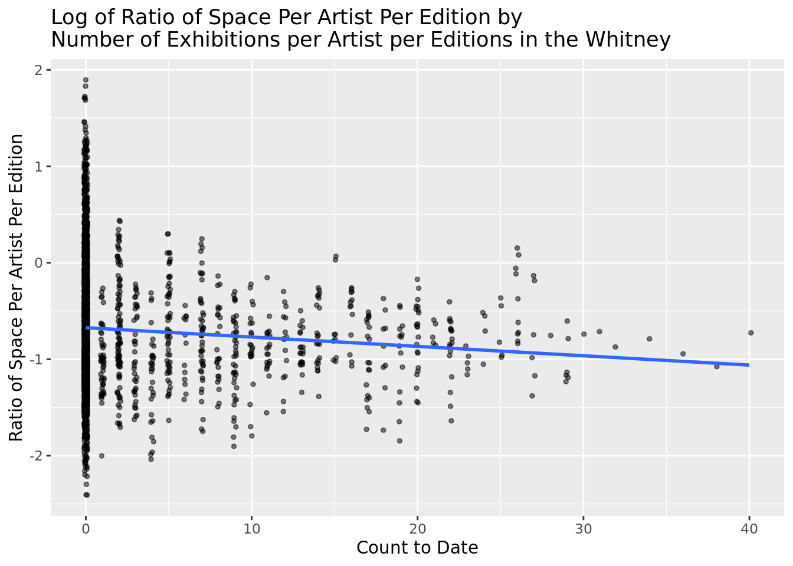

2 Model Exploration
3 Data Preparation for Modeling:
4 Model Exploration:
ddf="Satterthwaite"Satterthwaite test, more flexible, looking directly at p-values - non-parametric test - uses different error term, similar to a two same t-test, similar to ANOVA - analysis of variance - checking between different groups -
Backward reduced random-effect table:
Eliminated npar logLik AIC LRT Df Pr(>Chisq)
<none> 23 -1930.6 3907.2
(1 | artist_name) 0 22 -2606.4 5256.9 1351.7 1 < 2.2e-16 ***
---
Signif. codes: 0 '***' 0.001 '**' 0.01 '*' 0.05 '.' 0.1 ' ' 1
Backward reduced fixed-effect table:
Degrees of freedom method: Satterthwaite
Eliminated Sum Sq Mean Sq NumDF
artist_race_nwi:moma_count_to_date 1 0.0015 0.00151 1
artist_ethnicity:whitney_count_to_date 2 0.0092 0.00922 1
artist_ethnicity:moma_count_to_date 3 0.1130 0.11296 1
artist_ethnicity 4 0.0057 0.00574 1
artist_gender 5 0.3801 0.19006 2
artist_race_nwi:whitney_count_to_date 6 0.1548 0.15478 1
whitney_count_to_date 7 0.0232 0.02319 1
artist_race_nwi 8 0.0426 0.04263 1
artist_nationality_other:moma_count_to_date 0 3.3446 0.66892 5
DenDF F value Pr(>F)
artist_race_nwi:moma_count_to_date 539.28 0.0091 0.923923
artist_ethnicity:whitney_count_to_date 1970.66 0.0559 0.813065
artist_ethnicity:moma_count_to_date 731.38 0.6850 0.408150
artist_ethnicity 505.76 0.0348 0.852153
artist_gender 401.31 1.1522 0.316977
artist_race_nwi:whitney_count_to_date 480.27 0.9384 0.333175
whitney_count_to_date 984.87 0.1406 0.707781
artist_race_nwi 510.52 0.2585 0.611386
artist_nationality_other:moma_count_to_date 1221.63 4.0556 0.001178 **
---
Signif. codes: 0 '***' 0.001 '**' 0.01 '*' 0.05 '.' 0.1 ' ' 1
Model found:
log(space_ratio_per_page_total) ~ artist_nationality_other + moma_count_to_date + (1 | artist_name) + artist_nationality_other:moma_count_to_datepick a handful of interest
visualization : confidence intervals for each on of the slopes
predictors on the y axis -
bar plots of the pvalues another option
nationality discourse for significance
log transformation on the y variable -
stepwise model selection
the multiple of the number of degrees of freedom used for the penalty. Only k = 2 gives the genuine AIC: k = log(n) is sometimes referred to as BIC or SBC.
Linear mixed model fit by maximum likelihood . t-tests use Satterthwaite's
method [lmerModLmerTest]
Formula: log(space_ratio_per_page_total) ~ artist_nationality_other +
moma_count_to_date + artist_nationality_other * moma_count_to_date +
(1 | artist_name)
Data: gardnerjanson_museums_mod
AIC BIC logLik deviance df.resid
3893.6 3978.2 -1932.8 3865.6 3090
Scaled residuals:
Min 1Q Median 3Q Max
-3.6304 -0.5820 -0.0716 0.6203 3.0709
Random effects:
Groups Name Variance Std.Dev.
artist_name (Intercept) 0.1274 0.3569
Residual 0.1649 0.4061
Number of obs: 3104, groups: artist_name, 395
Fixed effects:
Estimate Std. Error
(Intercept) -9.291e-01 4.017e-02
artist_nationality_otherFrench 2.681e-01 6.377e-02
artist_nationality_otherOther -6.192e-02 5.836e-02
artist_nationality_otherBritish 1.044e-02 8.093e-02
artist_nationality_otherGerman -6.204e-02 8.653e-02
artist_nationality_otherSpanish 6.589e-01 2.002e-01
moma_count_to_date -1.026e-02 6.948e-03
artist_nationality_otherFrench:moma_count_to_date 2.872e-02 7.962e-03
artist_nationality_otherOther:moma_count_to_date 1.580e-02 8.077e-03
artist_nationality_otherBritish:moma_count_to_date 1.011e-02 1.689e-02
artist_nationality_otherGerman:moma_count_to_date 2.433e-02 8.943e-03
artist_nationality_otherSpanish:moma_count_to_date 3.528e-02 9.481e-03
df t value Pr(>|t|)
(Intercept) 4.979e+02 -23.131 < 2e-16
artist_nationality_otherFrench 4.367e+02 4.205 3.17e-05
artist_nationality_otherOther 5.139e+02 -1.061 0.289240
artist_nationality_otherBritish 4.405e+02 0.129 0.897407
artist_nationality_otherGerman 4.758e+02 -0.717 0.473735
artist_nationality_otherSpanish 3.689e+02 3.291 0.001096
moma_count_to_date 8.440e+02 -1.477 0.140001
artist_nationality_otherFrench:moma_count_to_date 1.037e+03 3.607 0.000324
artist_nationality_otherOther:moma_count_to_date 8.326e+02 1.956 0.050764
artist_nationality_otherBritish:moma_count_to_date 7.812e+02 0.599 0.549598
artist_nationality_otherGerman:moma_count_to_date 1.031e+03 2.721 0.006617
artist_nationality_otherSpanish:moma_count_to_date 1.819e+03 3.721 0.000205
(Intercept) ***
artist_nationality_otherFrench ***
artist_nationality_otherOther
artist_nationality_otherBritish
artist_nationality_otherGerman
artist_nationality_otherSpanish **
moma_count_to_date
artist_nationality_otherFrench:moma_count_to_date ***
artist_nationality_otherOther:moma_count_to_date .
artist_nationality_otherBritish:moma_count_to_date
artist_nationality_otherGerman:moma_count_to_date **
artist_nationality_otherSpanish:moma_count_to_date ***
---
Signif. codes: 0 '***' 0.001 '**' 0.01 '*' 0.05 '.' 0.1 ' ' 1
Correlation of Fixed Effects:
(Intr) art__F art__O art__B art__G art__S mm_c__ a__F:_ a__O:_
artst_ntn_F -0.630
artst_ntn_O -0.688 0.434
artst_ntn_B -0.496 0.313 0.342
artst_ntn_G -0.464 0.292 0.319 0.230
artst_ntn_S -0.201 0.126 0.138 0.100 0.093
mm_cnt_t_dt -0.458 0.288 0.315 0.227 0.213 0.092
arts__F:___ 0.400 -0.356 -0.275 -0.198 -0.185 -0.080 -0.873
arts__O:___ 0.394 -0.248 -0.399 -0.195 -0.183 -0.079 -0.860 0.751
arts__B:___ 0.188 -0.119 -0.130 -0.366 -0.087 -0.038 -0.411 0.359 0.354
arts__G:___ 0.356 -0.224 -0.245 -0.177 -0.349 -0.071 -0.777 0.678 0.668
arts__S:___ 0.336 -0.211 -0.231 -0.167 -0.156 -0.305 -0.733 0.640 0.630
a__B:_ a__G:_
artst_ntn_F
artst_ntn_O
artst_ntn_B
artst_ntn_G
artst_ntn_S
mm_cnt_t_dt
arts__F:___
arts__O:___
arts__B:___
arts__G:___ 0.320
arts__S:___ 0.302 0.5695 7.0 Results

GVIF Df GVIF^(1/(2*Df))
artist_nationality_other 1.94725 5 1.068913
moma_count_to_date 10.07286 1 3.173778
artist_nationality_other:moma_count_to_date 16.54427 5 1.323929GET PVALUES FOR COEFFICIENTS - STATISTICALLY SIGNIFICANT - GO THROUGH INTERPRETATIONS WITH LOG TRANSFORMATION AND MIXED EFFECTS MODEL - CONFIRM MODEL DIAGNOSTICS - AIC / BIC FOR MIXED EFFECTS -
R2m R2c
[1,] 0.171159 0.5323004Marginal R2 provides the variance explained only by fixed effects and conditional R2 provides the variance explained by the entire model, i.e., both fixed effects and random effects.
Model Diagnostics : Check for linearity, independence, residuals, normal distribution of the residuals - no pattern in residuals, constant variance
RESOURCE: https://www.ssc.wisc.edu/sscc/pubs/MM/MM_DiagInfer.html
Plotting : log transform some variables : Fitted v. Residuals
6 8.0 Discussion:
7 9.0 Limitations and Next Steps:
8 10.0 Appendix:
8.1 10.1 Assumptions:
8.1.1 10.1.1 Residuals and Constant Variance:

for the very low values of the predicted have very low variability for residuals - the rest varied
the a bulk of the data there is constant variability in the residuals
before log transforming our outcome variable, the constant variance assumption was violated. Therefore, in order to pass the constant variance assumption, I performed a log transformation.
8.1.2 10.1.2 Normality:
normal histogram = density plot overlayed -
Struggling to understand how to do this with a mixed-effects model

8.1.3 10.1.3 Linearity:
residuals v quantitative predictors
once i figure out how to augment the data and get the .resid I can make this visualization as well
no pattern is left behind


Normality of random effect: Get the estimate of random effect (in your case random intercepts), and check them as check the residual. But it is not efficient because you just have 7 random intercepts.
8.1.4 10.1.4 Independence:
Another assumption is the independence between subjects. No test, based on your judgement. Subject specific random intercept means the correlation between the response variable from the same subject are the same.
all obervations of different artists are independent -
fitting a mixed model - i do not believe that pieces by each artist is independence - at the artist level we have independence
log transforming predictors - interpretations change - variables weren’t changed - same idea, bit different
INDEPENDENCE: DOUBLE CHECK - EMPIRICALLY ARGUE OR ?
check for time series - residuals v. order of data points
irrelevant - based on how the sample was collected.
verbally argue the independence between artists - since we are using a mixed effects model, and our random effect is per artist, we eliminate the dependence of our observations had we not used a mixed effects model. Between artists, we expect the observations to be independent.
8.2 10.2 Data Dictionary:
Outcome:
space_ratio_per_page_total = The area in centimeters squared of both the text and the figure of a particular artist in a given edition of Janson’s History of Art divided by the area in centimeters squared of a single page of the respective edition.
Potential Predictors:
artist_gender = The gender of the artist.
artist_race = The race of the artist.
artist_race_nwi = The non-white indicator for artist race, meaning if an artist’s race is denoted as either white or non-white.
artist_ethnicity = The ethnicity of the artist.
artist_nationality_other = The nationality of the artist. Of the total count of artists through all editions of Gardner’s Art Through the Ages and Janson’s History of Art, 77.32% account for French, Spanish, British, American and German. Therefore, the categorical strings of this variable are French, Spanish, British, American, German and Other.
whitney_count_to_date = The count of exhibitions held by The Whitney of a particular artist at a particular moment of time, as highlighted by year.
moma_count_to_date = The count of exhibitions held by the Museum of Modern Art (MoMA) of a particular artist at a particular moment of time, as highlighted by year.
year = The year of publication for a given edition of Janson or Gardner.
Other variables:
edition_number = The edition number of the textbook from either Janson’s History of Art or Gardner’s Art Through the Ages.
book = Which book, either Janson or Gardner the particular artist at that particular time was included.
artist_unique_id = A unique identifying number assigned to artists across books and editions denoted in alphabetical order.